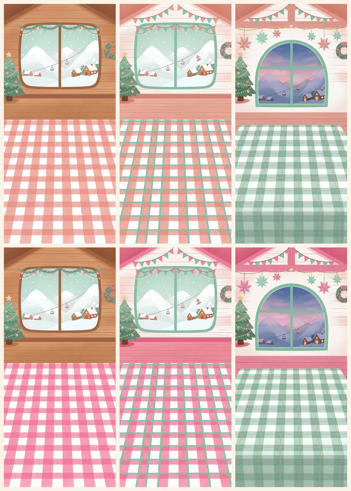
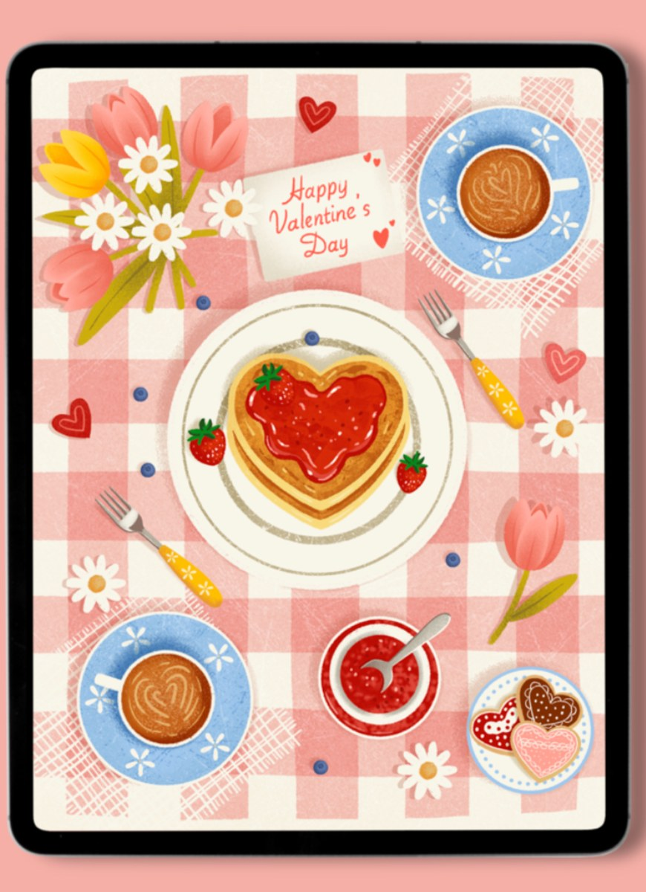

Food Truck Cafe
The Christmas chapter: its own page, kept apart from the report (clearing the report leaves it as it is).
C chapter
The Christmas chapter. Your ideas, kept here as the plan grows.
Your ideas, 18 November.
- Colours: pink (the table cloth) and white (snow).
- Customers wear winter clothes.
- Food: cookies.
- Drinks: several hot drinks.
From your plan of 15 November: out by mid-December, behind the chapter switch until then.
Cabin scenes, 23 November. Drafts by Gemini from your new direction; backgrounds only, no customers or food.

![Three winter cabin game backgrounds. 1: a brown wooden cabin, a big rectangular window onto a snowy ski resort with mountains, a ski lift and small cabins, a garland with pink and mint ornaments, a wreath, a little tree; pink and white checked cloth. 2: the same room with white and pink walls, a mint window frame, pink and mint bunting and a tiny snowboarder outside; pink and white checks with mint lines. 3: evening, an arched mint window onto a pink and lilac dusk over the mountains and glowing cabins, pink and mint paper star lanterns and string lights; mint and white checks with pink lines](visuals/cchapter_cabin.jpg)
- Pink changed (your word, 23 Nov): our game's pink, the patience flower's (#FF9EB8, light #FFC7D6), instead of the rosy pink. The scenes above are recoloured; ChatGPT's brief now says the game's pink.
- Your brief: our game's pink, white and our mint green (the Daily Treats card); an indoor cabin with a big window, snowing outside; holiday decorations; a snowboarding resort with mountains and cabins outside.
- All three keep the room calm, the window the centre, the decorations small: garland or bunting, a wreath, a little tree, string lights.
- Gemini, not ChatGPT: ChatGPT's free pictures for today were already used; the same brief waits in its chat for tomorrow (from 9:53) if you want ChatGPT's take too.
Your direction, 23 November.

- Your words: simple, cute and creative. Gemini's pink checked cloths (drafts 1 and 2) are nice; its upper backgrounds are bad, and its style is not ours.
- What I take from the picture: few, simple flat shapes with a soft grain; pink and cream checks; small friendly decorations (hearts, daisies) scattered with room between them; nothing crowded.
- ChatGPT drew three scenes from it (this picture for the look, our two chapters' screens for the layout): below.
Scene drafts by ChatGPT, 23 November. Backgrounds only: no customers, no food, so the place itself shows. Drafts for the feel, not game pictures yet.
![Three winter game backgrounds, each with the same pink and cream checked tablecloth and a holly sprig, a heart and a daisy at its far corners. 1: pink sky, snowy hills, three snow-topped trees, a small fence and a snowman with a red hat and scarf. 2: mint sky, a frozen pond with a small white bunny in a red scarf skating, mittens hanging on a string between two candy-striped poles. 3: early evening, a rose and lilac sky with a big moon and stars, trees with small lights, and a little red food truck far away on a hill](visuals/cchapter_gpt_scenes.jpg)
- All three: your pink and cream checks with a soft grain; a few big simple shapes above; pink bushes with red berries; only a hint of Christmas.
- 1: ChatGPT's own idea, a snowman. 2: a skating bunny (our bunny from the kitchen plate) and a string of mittens. 3: evening, with our red truck small on a hill.
- The far corner decorations (holly, heart, daisy) are only to show the feel; the real cloth would be plain.
- ChatGPT's three free pictures for today are used; more tomorrow.
Scene drafts by Gemini, 21 November. Painted from our chapter 1 and chapter 2 screens, same layout and look; drafts for the feel only, not game pictures yet.
![Three drafts of a winter game screen. 1: a snowy park with snowy pine trees, a lamp post with a wreath and fairy lights, a girl in a dark coat, knitted hat and scarf, and a small girl looking up; pink and white checked tablecloth with a cookie jar, gingerbread, hot chocolate, tea, a latte, a coffee machine. 2: a snowy village street at dusk with glowing windows and wreaths, a girl in a red puffer coat with earmuffs and a scarf; the same pink checked cloth with cookies, a teapot and hot drinks. 3: a snowy pine forest by a frozen lake in a pink morning, a log cabin with smoke, an older man in a knitted sweater, coat and bobble hat; a pink cloth with white dots, a cookie jar, snowflake and mitten cookies, hot chocolate, tea, apple cider with cinnamon, honey milk](visuals/cchapter_scenes.jpg)
- All three keep pink and white on the table (checks in 1 and 2; Gemini did not do the stripes I asked for in 2; white dots in 3) and snow everywhere, with only a little Christmas (a wreath, a few lights, a garland).
- Customers in winter clothes: coats, scarves, knitted hats, earmuffs.
- Foods and drinks drawn: cookie jars, gingerbread, snowflake and mitten cookies, hot chocolate with marshmallows, tea with lemon, latte, apple cider, honey milk.
- Next, once you pick a direction: the background on its own at our size, then the tablecloth, then each new food and drink as its own picture in our kitchen style.
Your answer, 23 November: the cloths of 1 and 2 are nice; the backgrounds and the style are not right. Kept here for the cloths.